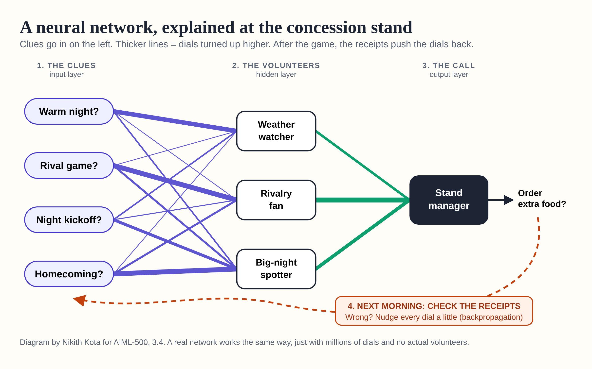

Introduction
Most AI rollouts don't fail because the tool is bad. They stall because the people asked to use it were never told, in plain words, what it actually does. "It's a neural network" usually ends the conversation instead of starting one. People nod, stop asking questions, and quietly decide not to trust it.
This artifact is my answer to that problem: a ten-minute lesson any leader can run, built around something everyone understands. I help run the concession stands at our home football games, so I explain a neural network as a crew of volunteers guessing whether tonight will be busy. Then you get to watch the "crew" actually learn, right on this page.
Description
The kit has three parts:
1. The lesson handout. A single printable page with a minute-by-minute plan, the diagram, a short worksheet, and answers to the questions people usually ask.
2. The Stand Crew trainer. An interactive demo of one artificial "neuron" learning from its mistakes. Press the button and watch the dials change as it checks the receipts.
3. The original explanation. My course discussion post, including the three rounds of AI prompting that shaped it.

The Stand Crew Trainer
This is one volunteer. Each clue has a dial, and if the clues add up to 4 or more, the volunteer calls "Busy!" Below are eight practice games with what really happened. Press the button to check the receipts: every wrong call nudges the dials for the clues in that game by 1.
The volunteer's dials (weights)
Try your own game
| Game | Clues | Total | Volunteer said | What happened |
|---|
- Press the button to start training.
The eight games are made-up practice examples for the demo, not real sales numbers. A real network does this with millions of dials and a computer doing the nudging.

Objective
To show that I can take a complex AI idea and teach it simply enough that a non-technical team understands what it does, how it learns, and where it shouldn't be trusted, using the communication-for-learning strategies from the course.
Process
- Started with the course challenge. The assignment asked for the best simple explanation of neural networks, built with a generative AI tool and the lesson's strategies for communicating to help people learn.
- Rejected the first draft. My first prompt got a textbook answer about "interconnected nodes inspired by the human brain." Accurate, but forgettable.
- Grounded it in real life. I rebuilt it around my concession stand and flipped the order so the story comes first and the technical terms come last.
- Added a hands-on step and an honest limit. A small math example people can do in their heads, plus a section on where the analogy breaks, including why my stand's six games of data are far too few for a neural network.
- Turned a post into a kit. For leaders, I wrote a minute-by-minute lesson plan, a worksheet, and answers to common questions on one printable page.
- Made the learning visible. I built the Stand Crew trainer so people can see "learning" happen instead of just reading about it, and I tested that the dials settle after a couple of rounds.
Tools and Technologies Used
Value Proposition
Unique Value
Most explanations of neural networks borrow the same picture of a brain or a dog learning tricks. This one uses an everyday decision people can feel (how much food to order) and lets them watch a neuron learn. It's also honest about the limits, which matters more than a perfect metaphor. Artifact 1 shows I can research AI and Artifact 2 shows I can judge which kind fits a problem. This one shows a third skill: teaching it so other people understand.
Relevance
In healthcare and government, staff are being asked to work next to AI tools they've never had explained. Leaders need a short, low-pressure way to open that conversation without slides or a data science degree. This kit gives them one they can print and run in a staff meeting, which fits my goal of helping leaders know what AI is ready for and what is still hype.
References
Anthropic. (2026). Claude [Large language model]. https://claude.ai
Indiana Wesleyan University. (n.d.). 3.4 Discussion: Communicating for learning [Lesson]. AIML-500: Machine Learning Fundamentals. Brightspace.
Indiana Wesleyan University. (n.d.). Deep learning and neural networks [Lesson slides]. AIML-500: Machine Learning Fundamentals. Brightspace.